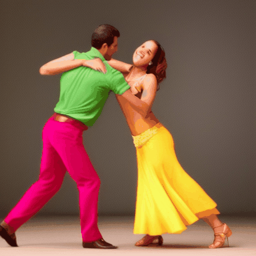
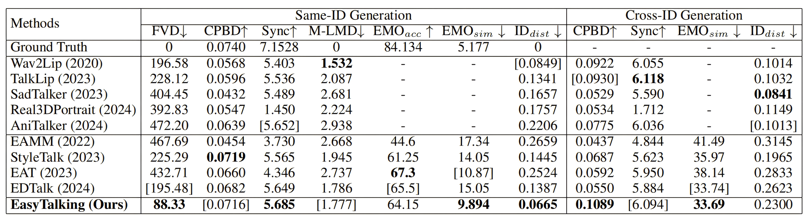
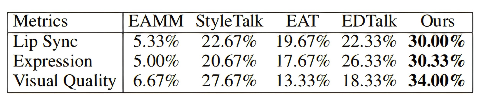
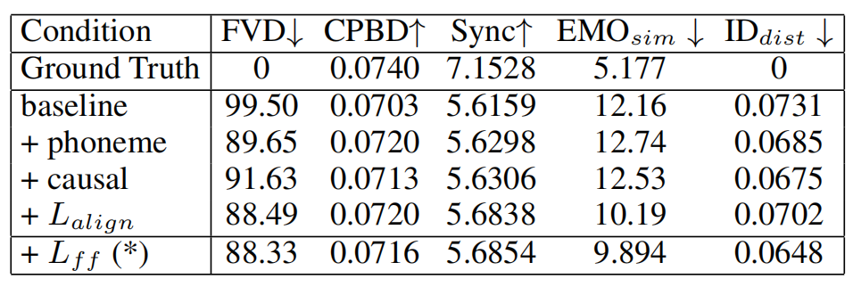

Abstract.

xxx.

xxx.

xxx.
We should use technology responsibly and be careful about the synthesized content. There is a risk that EasyTalking could be misused. Thus, we will restrict the access to our code and pre-trained models when making the code public, likely by validating the institutional email. Furthermore, we also consider embedding visible or invisible digital watermarks in any generated content.
Please be aware that all videos on this page are algorithmically generated from publicly available sources and are intended solely for academic demonstrations and algorithm comparisons. Any other form of usage is prohibited. Besides, if required by the original image owner or in the case of misuse of the models, the images, models, and codes associated with this project may be removed at any time.